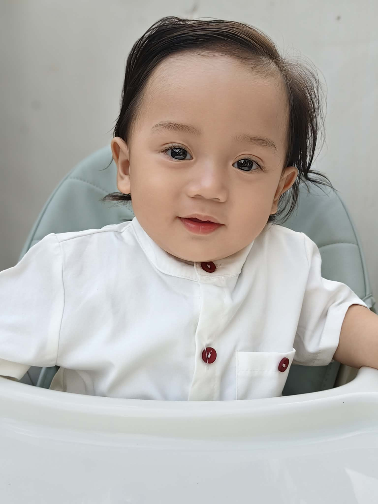
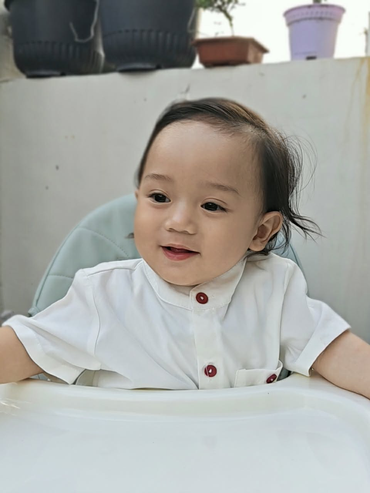
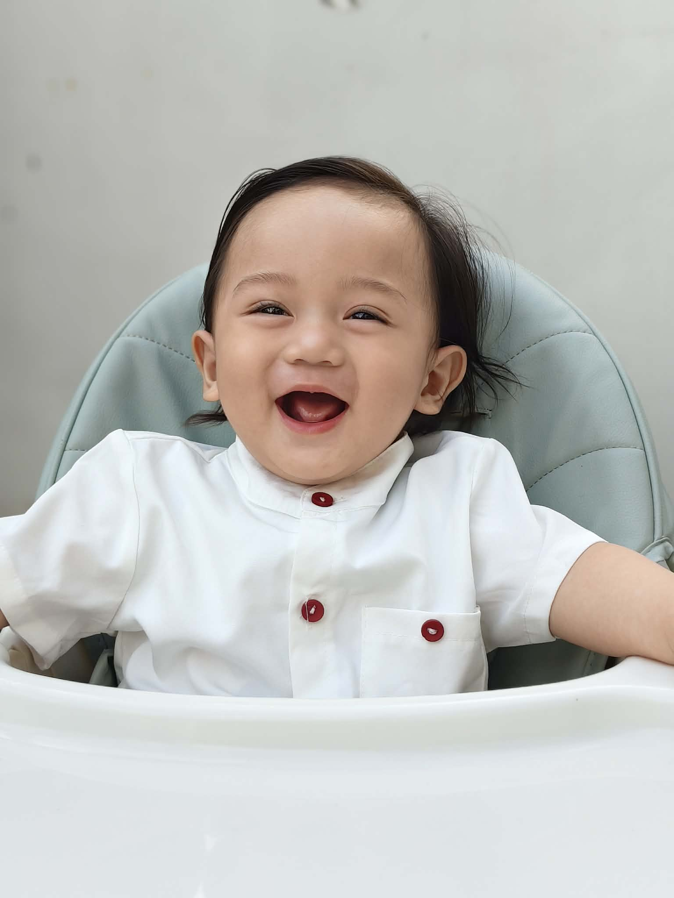

THE SACRAMENT
Holy Baptism
Saturday, 21 November 2026
10:00 AM
St. Jude Thaddeus Parish Church
Barangay San Agustin
Trece Martires City, Cavite
A ROYAL BAPTISMAL CELEBRATION
A noble beginning, a lifetime of blessings.
21 NOVEMBER 2026 · TRECE MARTIRES CITY

WITH LOVE, WE INVITE YOU TO CELEBRATE
Wonderfully made, endlessly loved, forever blessed.
With hearts full of gratitude and joy, Cybil Blossom Yellow and King Christian invite you to celebrate the Holy Baptism of their beloved son.
Discover the celebration ↓YOU ARE CORDIALLY INVITED
THE SACRAMENT
Saturday, 21 November 2026
10:00 AM
St. Jude Thaddeus Parish Church
Barangay San Agustin
Trece Martires City, Cavite
THE CELEBRATION
Saturday, 21 November 2026
12:00 Noon
Clubhouse, Pacifictown Park Villas
Blk 12 Lot 11, Purok 4
Trece Martires City, Cavite
COUNTING DOWN TO THE BLESSING
We cannot wait to celebrate with you.
A FEW PRECIOUS MOMENTS
A little glimpse of Duke's world.


AN INVITATION TO DUKE'S ROYAL CIRCLE
Every remarkable journey is shaped by people who offer love, wisdom, and encouragement along the way.
Would you like to become one of Duke's Royal Guardians of Love?
A voluntary, symbolic gesture of love and support. This is not an official church godparent registration or appointment.
THE ROYAL CIRCLE
No interviews. No entrance exams. Just a heart willing to care. ♡
YOUR ROYAL KEEPSAKE
His Grace has received your promise with gratitude.
A commemorative keepsake only. Not an official church certificate.
Your presence, prayers, and warm wishes will make Duke's special day even more meaningful.
Cybil Blossom Yellow & King Christian
DUKE SAFFRON M. YUMANG · 21 NOVEMBER 2026